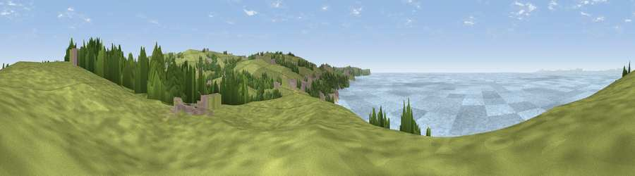

Viewpoint near Lowca
#8226 in England · top 53% of its area beats it · near LowcaWhere it is
The exact computed spot (NX 98025 21725). Click the marker for map links.
The view, rendered

A 360° render of this exact spot computed from the terrain model, tree cover and land cover — summer colours, afternoon light, calibrated against photographs of famous viewpoints. Real trees, hedges and buildings will differ in detail.
The panorama
Grey silhouette: terrain skyline in each direction (720 bearings, Earth curvature and refraction included). Dashed green: skyline with trees (+15 m) and buildings (+8 m) as obstacles. Blue strip: how far the ground is visible on each bearing.
Where the view opens
Wedge length = distance to the farthest visible ground on that bearing (vegetation-aware). Rings at 10, 25 and 50 km.
What fills the view
46% water · 42% grassland · 8% woodland · 4% built-up
Angular shares of the visible panorama (visual magnitude), not map area. Landscape diversity 0.46 (0–1 Shannon).
Key numbers
More beautiful places nearby
The staircase of upgrades: each row has a higher view potential than everything closer. Driving times are estimates from straight-line distance, calibrated against real road routing — check an actual route before setting out.
| Place | Direction | Drive | Score |
|---|---|---|---|
| Viewpoint near Lowca | NNE · 1 km | ~2 min | 70.3 |
| Viewpoint near Low Moresby | ESE · 2 km | ~6 min | 71.9 |
| Viewpoint near Low Moresby | ESE · 2 km | ~6 min | 76.5 |
| Viewpoint near Moresby Parks | SSE · 3 km | ~7 min | 78.8 |
| Viewpoint near Sandwith | SSW · 6 km | ~13 min | 83.0 |
| Hannah Moor | SSW · 9 km | ~18 min | 83.6 |
| Viewpoint near Cleator | SE · 10 km | ~20 min | 86.1 |
| Blake Fell | E · 13 km | ~24 min | 86.9 |
54.58041, -3.57925 · source: screening · position refined by local search. Computed location — check access rights before visiting.